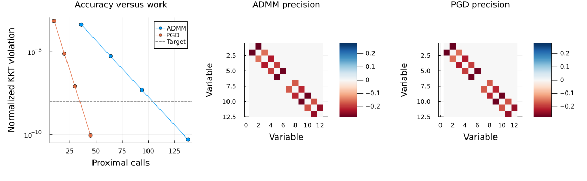

Graphical lasso: ADMM and proximal gradient

ADMM and proximal gradient descent (PGD, also called G-ISTA for this problem) fit the same graphical-lasso estimator on the same covariance and penalty. The estimates should agree once both reach a common accuracy target. See the ADMM contract and matrix PGD contract.
One Gaussian sample and one penalty
Rows of randn(n, p) * U have covariance U' * U = inv(Θ_true). The centered sample covariance uses divisor n. The penalty sums over the full matrix, counting each off-diagonal pair twice and leaving the diagonal free.
using LinearAlgebra, Printf, Random, ProximalBase, ProximalSolvers
n, p = 240, 12
Θ_true = Matrix(SymTridiagonal(fill(1.4, p), fill(-0.38, p - 1)))
Σ_true = inv(Θ_true)
U = cholesky(Symmetric(Σ_true)).U
X = randn(Xoshiro(444), n, p) * U
X .-= sum(X; dims=1) ./ n
S = Matrix(Symmetric(X' * X / n))
Λ = fill(0.12, p, p)
Λ[diagind(Λ)] .= 0.0
f, g = LogDetLoss(S), NormL1(1.0, Λ)
start = Matrix{Float64}(I, p, p);Check accuracy from the returned matrix
Recompute the full objective and the normalized KKT violation from the data. Clipping inv(Θ) - S to the entrywise penalty bounds gives a dual perturbation with zero diagonal. If its sum with S passes Cholesky, the dual objective logdet(S + perturbation) + p supplies a lower bound up to rounding.
function diagnostics(Θ, S, Λ)
@assert Θ == Θ' && all(isfinite, Θ)
factor = cholesky(Symmetric(Θ))
inverse = inv(factor)
gradient = S - inverse
kkt = maximum(eachindex(Θ)) do i
iszero(Θ[i]) ? max(abs(gradient[i]) - Λ[i], 0.0) :
abs(gradient[i] + Λ[i] * sign(Θ[i]))
end / max(1.0, maximum(abs, S), maximum(Λ))
primal = dot(S, Θ) - logdet(factor) + dot(Λ, abs.(Θ))
perturbation = clamp.(inverse - S, -Λ, Λ)
@assert all(abs.(perturbation) .<= Λ)
dual = cholesky(Symmetric(S + perturbation); check=false)
gap = issuccess(dual) ? primal - (logdet(dual) + size(S, 1)) : missing
(; primal, kkt, gap, eigmin=eigmin(Symmetric(Θ)))
end;Compare work at the same accuracy
Run each method from the identity at several solver-specific tolerances. The chart uses independent KKT residuals. Proximal calls include both proximal operators used by ADMM and the penalty calls made by PGD. ADMM reports proximal calls, and PGD also reports loss and gradient calls. The final table's wall times are illustrative measurements of warmed solves.
function fit(start, f, g, method, options)
Θ = copy(start)
elapsed = @elapsed result = solve!(Θ, f, g, method, options)
(; Θ, result, elapsed, accuracy=diagnostics(Θ, f.S, g.w))
end
pgd = ProximalGradientDescent()
admm = ADMMSolver(; abstol=1e-11, reltol=1e-11)
options = ProximalOptions(; maxiter=8000)
pgd_options = ProximalOptions(; maxiter=8000, gradtol=1e-10, ftol=0)
fit(start, f, g, admm, options)
fit(start, f, g, pgd, pgd_options)
runs = (
ADMM = [fit(start, f, g, ADMMSolver(; abstol=t, reltol=t), options)
for t in (1e-4, 1e-6, 1e-8, 1e-11)],
PGD = [fit(start, f, g, pgd, ProximalOptions(; maxiter=8000, gradtol=t, ftol=0))
for t in (1e-3, 1e-5, 1e-7, 1e-10)],
)
target = 1e-8
for (name, attempts) in pairs(runs)
run = last(attempts)
r, d = run.result, run.accuracy
@assert r.converged && d.eigmin > 0 && d.kkt <= target
@assert isapprox(r.minimum, d.primal; rtol=1e-12)
@assert !ismissing(d.gap) && -1e-12 <= d.gap <= target * max(1, abs(d.primal))
println((; solver=name, status=name === :ADMM ? r.status : :converged,
d.eigmin, d.primal, d.kkt, d.gap, r.iterations,
f_calls=name === :ADMM ? missing : r.f_calls,
grad_calls=name === :ADMM ? missing : r.grad_calls,
r.prox_calls, illustrative_seconds=run.elapsed))
end
Θ_admm, Θ_pgd = last(runs.ADMM).Θ, last(runs.PGD).Θ
@assert maximum(abs, Θ_admm - Θ_pgd) <= target * max(1, maximum(abs, Θ_pgd))
edge_set(Θ) = Set((i, j) for j in 2:size(Θ, 1) for i in 1:j-1 if abs(Θ[i, j]) > target)
@assert edge_set(Θ_admm) == edge_set(Θ_pgd)
@printf "Maximum entrywise difference %.2e with %d shared edges\n" maximum(abs, Θ_admm - Θ_pgd) length(edge_set(Θ_pgd))(solver = :ADMM, status = :converged, eigmin = 0.7957197850161271, primal = 9.738900984459132, kkt = 5.1230797382118e-11, gap = -1.7763568394002505e-15, iterations = 69, f_calls = missing, grad_calls = missing, prox_calls = 138, illustrative_seconds = 0.001212082)
(solver = :PGD, status = :converged, eigmin = 0.7957197850160814, primal = 9.738900984459132, kkt = 8.941092310976728e-11, gap = -1.7763568394002505e-15, iterations = 45, f_calls = 46, grad_calls = 46, prox_calls = 45, illustrative_seconds = 0.000246664)
Maximum entrywise difference 1.06e-10 with 10 shared edgesThe precision panels share a color scale and omit the diagonal to show the off-diagonal entries used to infer the graph.
using Plots
work = plot(; yscale=:log10, xlabel="Proximal calls", ylabel="Normalized KKT violation",
title="Accuracy versus work", legend=:topright)
for (name, attempts) in pairs(runs)
plot!(work, [run.result.prox_calls for run in attempts],
[max(run.accuracy.kkt, eps()) for run in attempts]; label=string(name), marker=:circle)
end
hline!(work, [target]; label="Target", linestyle=:dash, color=:gray)
shown = [copy(Θ_admm), copy(Θ_pgd)]
for estimate in shown
estimate[diagind(estimate)] .= 0.0
end
limit = maximum(A -> maximum(abs, A), shown)
precision = [heatmap(A; title, color=:RdBu, clims=(-limit, limit), yflip=true,
aspect_ratio=1, xlabel="Variable", ylabel="Variable")
for (title, A) in zip(("ADMM precision", "PGD precision"), shown)]
figure = plot(work, precision...; layout=(1, 3), size=(1130, 350), titlefontsize=11,
left_margin=5Plots.mm, bottom_margin=4Plots.mm)
savefig(figure, "graphical_lasso_solvers.svg")
nothing